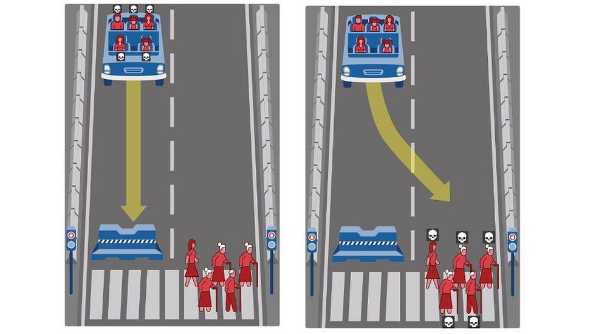

Ethics
Self Driving Cars
However, there is currently still one major problem in the world of autonomous driving, and that is: How does
the machine act in an unavoidable
situation e.g., a child and an old granny cross the road, the car cannot brake in time.
Who does the car, or the computer, run over? Such ethical and moral decisions cannot be made by a computer
itself but must be programmed beforehand so that it can react to the situation.
A human being, on the other hand, would decide at the moment the situation occurs, based on various factors that
a machine does not have. Therefore, the following questions arise:
- Can a machine evaluate the situation correctly at all, for example, distinguish between a doll carriage and
a real baby carriage?
- Would offsetting human lives represent an unreasonable instrumentalization of the "victims"?
- If an offsetting would make sense, how is this to be organized, i.e. which criteria play a role (e.g. the
number of people or age)?
If these questions cannot be answered or implemented, to what extent will autonomous driving ultimately be
permitted at all?